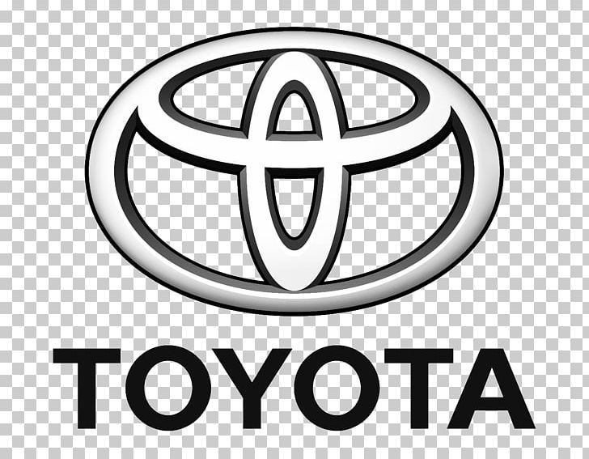
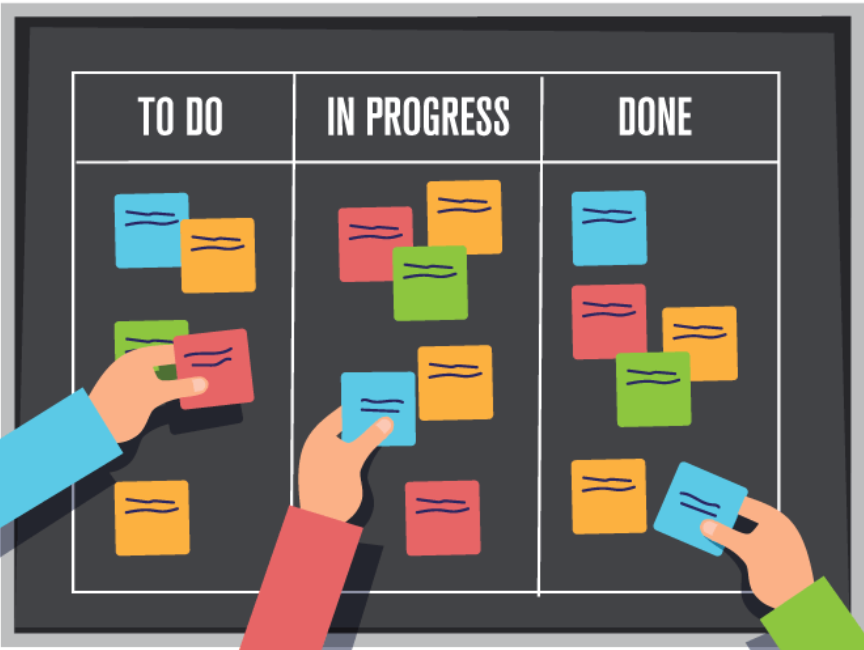

Kanban es una metodología de gestión visual que permite organizar y optimizar tareas dentro de un equipo de trabajo. Su origen se remonta al sistema de producción de Toyota, donde se utilizaba para controlar el flujo de materiales en las líneas de ensamblaje. Con el tiempo, esta práctica se ha adaptado a diferentes contextos, demostrando ser una herramienta eficaz no solo en la industria, sino también en el desarrollo de software y páginas web.
En la actualidad, Kanban facilita la división de proyectos en tareas más claras y manejables, representadas en tableros físicos o digitales que muestran el avance de cada actividad. Esto no solo mejora la productividad y la comunicación dentro de los equipos, sino que también permite una mayor flexibilidad para adaptarse a cambios y optimizar la calidad de los resultados.
Kanban es un proceso de gestión visual que permite organizar y optimizar el flujo de tareas de manera más eficiente y clara. Dentro del entorno laboral, consiste en representar los trabajos en tableros, lo que facilita identificar el estado de cada actividad y mejora tanto la organización como la comunicación en el equipo de trabajo. Asimismo, en el ámbito del desarrollo y la creación de páginas web, Kanban resulta especialmente útil porque ayuda a dividir el proyecto en fases como diseño, programación, pruebas y publicación, asegurando que cada proceso se cumpla de forma ordenada y sin retrasos.
La implementación de Kanban en el ámbito laboral otorga beneficios significativos tanto en la organización de los procesos como en la eficiencia de los equipos. Taiichi Ohno (1988) señala que el sistema Kanban logra asegurar que el trabajo se limite a “lo necesario, en el momento necesario y en la cantidad necesaria”, evitando pérdidas de tiempo y mejorando el uso de los recursos. En la época moderna de los negocios y el desarrollo de software, David J. Anderson (2010) menciona que “Kanban ayuda a visualizar el trabajo, limitar el trabajo en progreso y maximizar la eficiencia”, lo que lo convierte en una herramienta de gran utilidad para proyectos tecnológicos. De igual manera, Corey Ladas (2009) afirma que “Kanban se ha convertido en una forma de aplicar principios ágiles de manera evolutiva, permitiendo a los equipos adaptarse sin necesidad de cambios radicales”, lo cual refuerza su valor en entornos como el desarrollo y la creación de páginas web.
En conclusión, Kanban representa un proceso de gestión visual que no solo ayuda a la organización y al control de los proyectos, sino que también refuerza la confianza dentro del equipo de trabajo y optimiza el uso de los recursos. Su aplicación resulta especialmente eficiente en el ámbito del desarrollo y la creación web, ya que permite dividir las tareas en fases claras y ordenadas, reduciendo retrasos, mejorando la coordinación y favoreciendo la optimización en el entorno laboral, justificando así su estudio y aplicación en proyectos actuales.
Kanban es un proceso de gestión visual que tiene su origen en la empresa de Toyota, creado por Taiichi Ohno en Japón, a finales de la década de 1940, su objetivo principal es mejorar el flujo de trabajo mediante tableros y tarjetas que representan tareas, permitiendo controlar de manera más ordenada el flujo de trabajo. A través de esta técnica, los equipos pueden identificar fácilmente el estado de cada tarea reduciendo problemas de comunicación y mejorando la eficiencia de la organización de proyectos
Ahora bien, el funcionamiento de Kanban se basa en la visualización del flujo de trabajo en un tablero, ya sea físico o digital. Este tablero se encuentra representado con columnas que visualizan cada etapa del proceso, como “por hacer”, “en progreso” y “finalizado”. Cada tarea se refleja en una tarjeta que se desplaza de izquierda a derecha a medida que se avanza en el proceso. Este sistema ayuda a limitar el número de tareas en curso, evitando la sobrecarga de trabajo, mejorando la comunicación y la organización, y permitiendo una entrega ordenada.
Taiichi Ohno, al mando de Toyota en los años 40, desarrolló el método Kanban con la finalidad de optimizar la eficacia productiva a través de un sistema visual de control (Ohno, 1988). Su primer uso se enfoca en la disminución de desperdicios durante la manufactura y en el control de inventarios. Con el tiempo, esta metodología fue ajustada a otros ámbitos como la gestión de proyectos y el desarrollo de software, transformándose en una de las metodologías ágiles más empleadas hoy en día (Anderson, 2010).
La importancia de Kanban como herramienta de gestión ha sido resaltada por varios autores. Ohno (1988) sostuvo que el sistema hace posible la producción de "lo necesario, en el momento adecuado y en la cantidad apropiada". Más adelante, Anderson (2010) indicó que Kanban se basa en visualizar el trabajo y limitar las tareas en progreso, lo cual mejora la eficiencia y disminuye los plazos de entrega. Ladas (2009) subrayó, por otra parte, que Kanban es una forma de aplicar principios ágiles de manera evolutiva, pues posibilita la mejora de los procesos sin necesidad de hacer cambios radicales. Estas pruebas indican que Kanban no se restringe solamente a la manufactura, sino que ha crecido hacia varias áreas debido a su capacidad de adaptarse.
Los tableros, las tarjetas y las restricciones de trabajo en progreso (WIP) son los tres componentes fundamentales de Kanban. Las etapas de un proyecto, que comúnmente se dividen en columnas como "Por hacer", "En progreso" y "Finalizado", son representadas por los tableros. Las tarjetas muestran cada tarea y se mueven conforme el proceso avanza. El WIP define restricciones sobre cuántas actividades pueden estar en ejecución simultáneamente, para prevenir la saturación del equipo. Asimismo, se emplean indicadores como el lead time (tiempo total desde que se solicita hasta que se entrega), el cycle time (tiempo que toma llevar a cabo una tarea) y el throughput (número de tareas finalizadas en un intervalo de tiempo). Estos conceptos posibilitan el análisis de la eficacia del flujo de trabajo y favorecen la mejora continua (Anderson, 2010).
Para concluir, el Kanban es una metodología de gestión visual que fusiona los principios de la manufactura japonesa con métodos ágiles contemporáneos. Su importancia se basa en la habilidad para optimizar los procesos, mejorar la comunicación entre los equipos y asegurar entregas a tiempo. Su uso es especialmente útil en el contexto de crear páginas web, ya que organiza las etapas de diseño, programación, pruebas y publicación de forma ordenada, disminuyendo los retrasos y favoreciendo la cooperación. Por lo tanto, el marco teórico de Kanban proporciona la base conceptual necesaria para entender cómo esta metodología puede ayudar a optimizar el ambiente de trabajo en los proyectos tecnológicos actuales.
